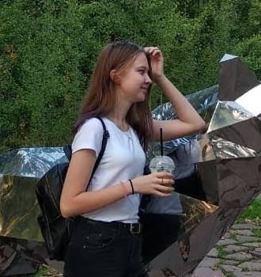

Жизнь — это больница, где каждый пациент мечтает перебраться на другую кровать.
—Ш.Бодлер
Немного обо мне:
- Люблю котиков
- Люблю собакенов
- Люблю курочек
- Боюсь голубей
Еще немного обо мне:
- у меня нет котиков
- у меня нет собакенов
- курочки только в деревне
- у меня нет голубей
Тихомирова Кристина
Окончила школу №7 в Йошкар-Оле, подала документы в ПГТУ просто, чтобы было. В итоге поступила на ПС. Думала, что мне нравится программировать, а сейчас это приносит много проблем, к сожалению.
Мое хобби
В свое свободное время я либо провожу время с друзьями и родными, либо сижу дома и пытаюсь что-то сделать по учебе. Чаще всего решаю математику и физику. Чуть реже птаюсь сделать этот сайт и делать лабораторные по основам программирования. Еще реже смотрю фильмы и читаю книги.
Ссылка на ВК